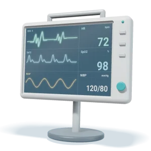
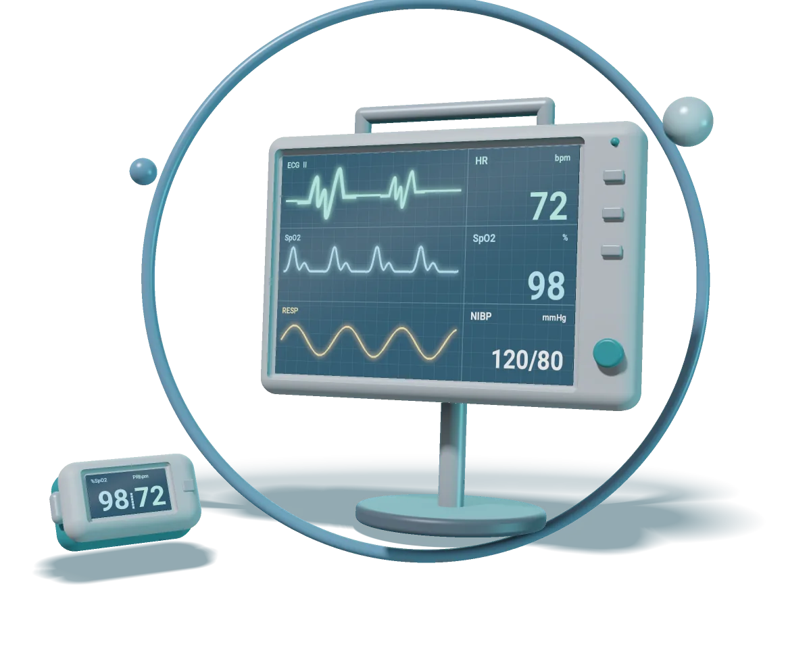
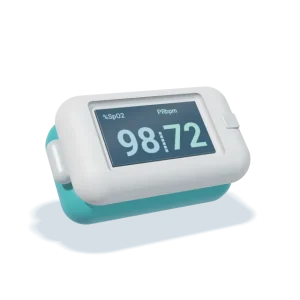
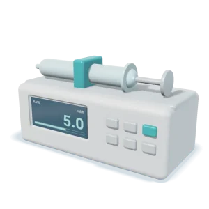

موجودبازار B2B تجهیزات پزشکی
تجهیزات پزشکی را دقیق پیدا کنید، با اطمینان تأمین کنید.
برای بیمارستانها، کلینیکها و آزمایشگاهها: تجهیزات را جستوجو کنید، مشخصات را کنار هم ببینید و از فروشگاه تکطب تهیه کنید.

ویژهٔ خرید حرفهای بیمارستانها کلینیکها آزمایشگاهها مطبها مراکز دندانپزشکی
دستهبندیها
از دستهٔ درست شروع کنید
فروشگاه
محصولات منتخب برای مراکز درمانی

موجود
پیشسفارش- بدون تصویر ناموجود
برای تأمینکنندگان
محصولاتتان را به خریداران حرفهای تجهیزات پزشکی برسانید
تولیدکننده یا واردکنندهاید؟ در تکطب فروشگاه خودتان را داشته باشید و به مراکز درمانی عرضه کنید.